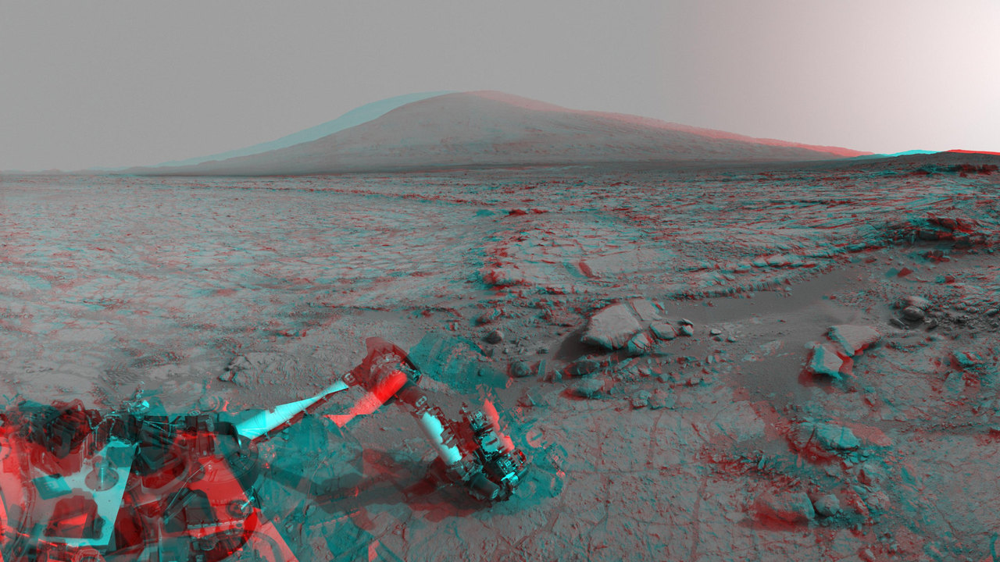

Everything
All resources
On the wall
Four films and three slide walls
Films play here on a loop in a fullscreen player. Slide walls open in their own page and run by themselves. Everything goes fullscreen with F, and Esc leaves.
Films
Slide walls
pages that advance on their own, timed so a slide can be read across the roomThe programme
Tea With Tomorrow
The run of show for the evening: a published three-hour Futures Literacy Lab (the UNESCO method) that opens with the Polak Game and ends with a futurist interviewed in the Celebrity Interview format, with tea on the tables throughout. It comes in two lengths, 3 h 55 min or 3 h 30 min, and has a party clock for the host.
Where the wall fits
A suggestion. The programme page sets the actual times.
Camera mirror
Mirror 2050
A live camera for the guests: eight effects that went viral on X, rebuilt in one page and played with the hands. Nothing is filmed or uploaded; the camera stays in the browser.

Keys 1–8, or party mode
For 3D glasses
Mars in 3D
Real stereo pictures of Mars, taken by the rovers, landers, the Ingenuity helicopter and orbiters, with a live 3D globe that flies to each landing site. Red/cyan glasses, red lens on the left eye. It runs by itself, about 13 minutes a loop, and works offline.

The intro has a glasses test. Arrow keys skip, G opens the globe alone (drag to turn it), I lists every picture with its source. NASA pictures are public domain, ESA's are CC BY-SA 3.0 IGO.
Seven missions, keys 1–7
Sound
The soundtrack and the music pages
The films are silent apart from The Roast, so the room's sound comes from the playlist.
Read and explore
The research behind the wall
Before the night
Pre-flight on the projector laptop
Ticks are kept in this browser only.
Rebuild
Where each piece comes from
Run each command from the folder root. Every build reads its own data file and writes to its dist/ or renders/ folder.
| Piece | Source | Command |
|---|